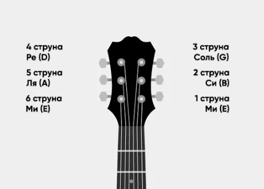
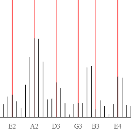
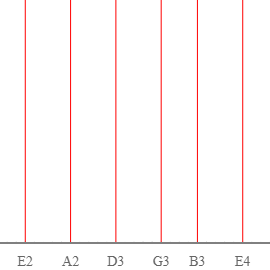
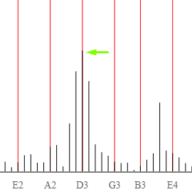

Справочник
1 струна - нота E (Ми)
2 струна - нота B (Си)
3 струна - нота G (Соль)
4 струна - нота D (Ре)
5 струна - нота A (Ля)
6 струна - нота E (Ми)

Дополнительные сведения по работе с приложением
- Каждый такт звука сооветсвует каждой ноте фортепьианной гаммы 
- Красными линиями обозначены ноты 6-ти струн при открытой игре 
- Сила ноты определяется высотой тембра звука 